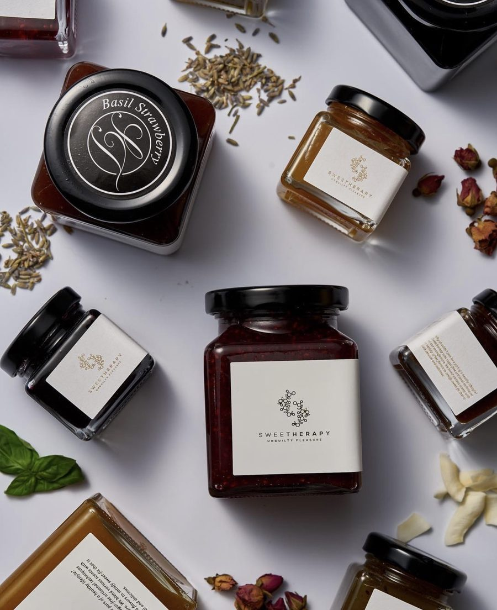
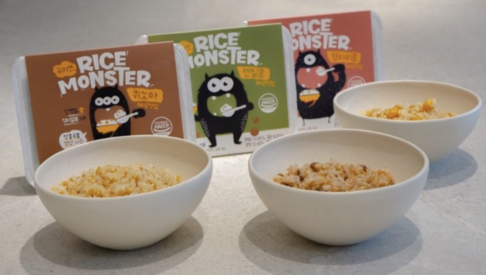
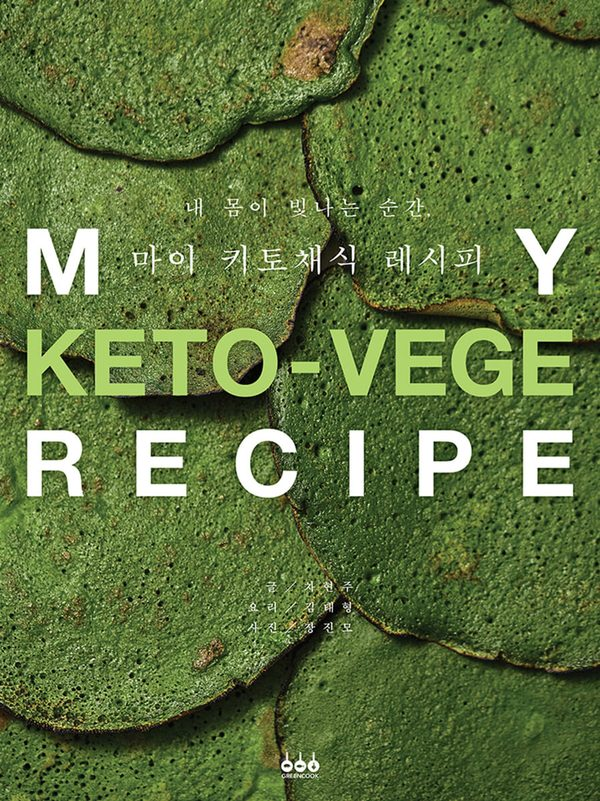
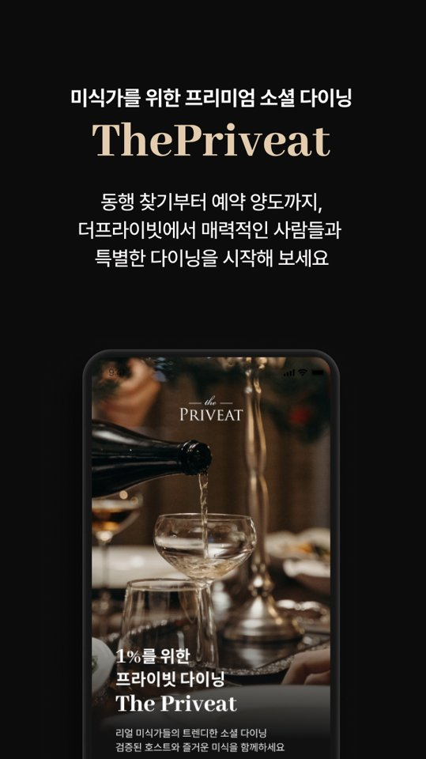
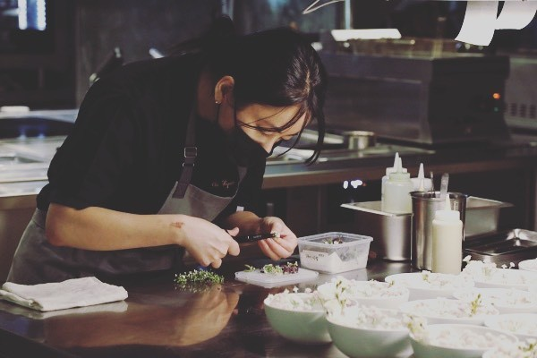
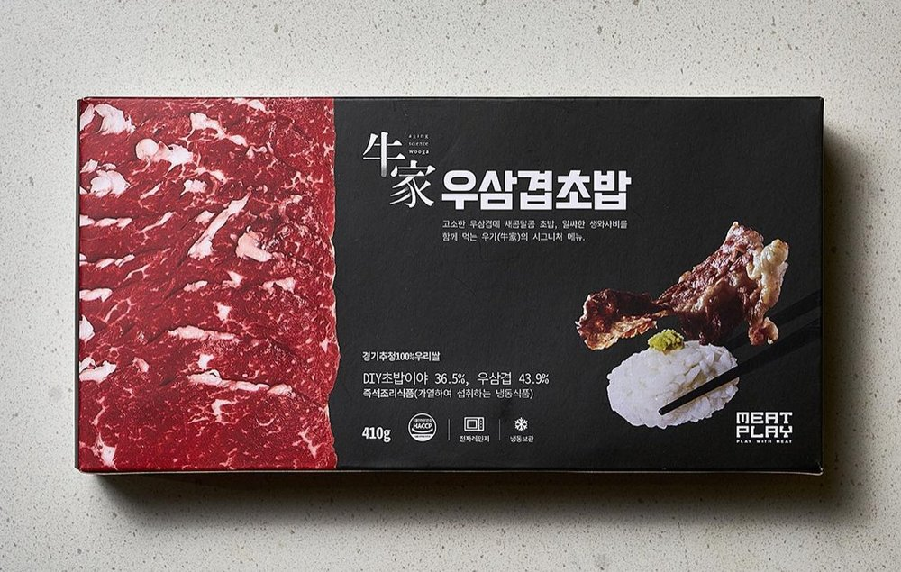
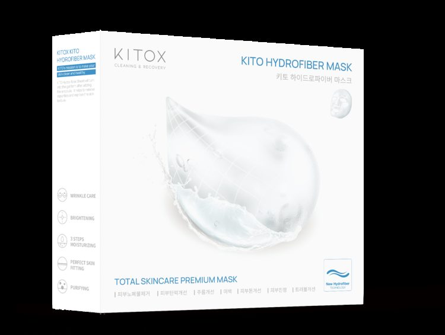
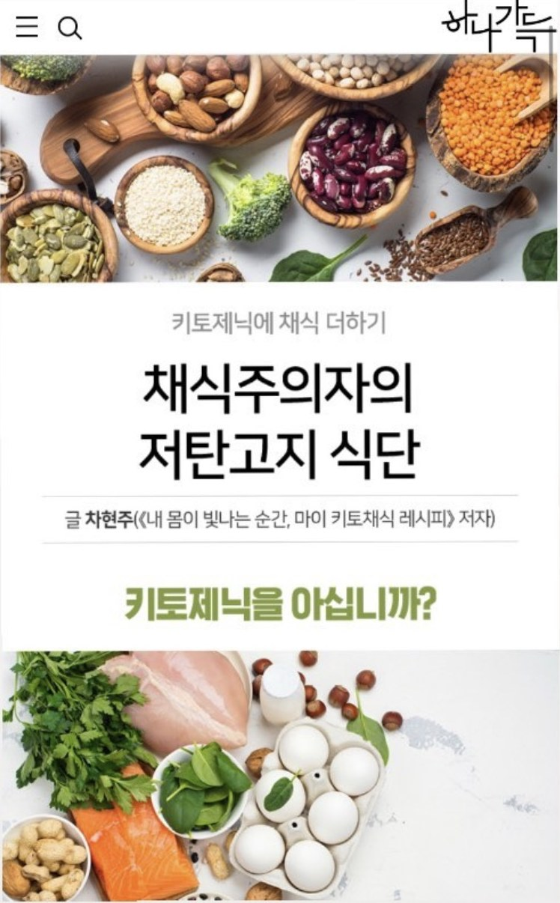

차현주는 F&B·라이프스타일 창업가입니다. 저당 스프레드 Sweetherapy는 OEM으로, 냉동 곤약밥 SuperRice는 부산에 직접 세운 공장에서, 기획부터 생산·유통까지 혼자 만들었고, 키토채식 요리책 『내 몸이 빛나는 순간, 마이 키토채식 레시피』(2021)를 썼습니다. 지금은 서울 다이닝 큐레이션 매거진 더프라이빗을 운영합니다.
Hyunju Cha is an F&B and lifestyle entrepreneur. She single-handedly built two food brands from concept to production and distribution: Sweetherapy, low-sugar spreads made with an OEM partner, and SuperRice, a frozen konjac rice made in a facility she set up in Busan. She wrote the vegetarian keto cookbook When My Body Glows: My VegeKeto Recipes (2021) and now runs The Priveat, a Seoul dining curation magazine.
직접 창업한 두 브랜드 모두 기획부터 원료 소싱, 생산, 유통까지 혼자 맡았습니다. Sweetherapy는 성수동 매장 제조·판매에서 OEM 생산으로 전환했고, SuperRice는 부산에 직접 세운 공장에서 생산했습니다. 두 브랜드 모두 2019년 중소벤처기업부 K-Startup 지원사업에 선정됐습니다.
She ran both brands she founded herself, from concept and sourcing to production and distribution. Sweetherapy moved from in-store production in Seongsu-dong to an OEM partner; SuperRice was produced in a facility she set up in Busan. Both were selected for the Ministry of SMEs and Startups' K-Startup program in 2019.
설탕 대신 프락토올리고당으로 단맛을 내, 당을 낮추고 발림성을 부드럽게 만든 잼 10종입니다. 밀크잼은 우유 대신 코코넛밀크로 만들었습니다.
Ten jams sweetened with fructooligosaccharides instead of sugar, for lower sugar and a smooth, spreadable texture. The milk jams used coconut milk in place of dairy.
2016년 3월부터 약 1년간 성수동 서울숲2길에서 제조·판매를 겸한 Sweetherapy 매장을 운영했습니다. 이후 온라인 판매로 전환하고 생산은 OEM으로 이관했습니다.
From March 2016, for about a year, she ran a Sweetherapy shop on Seoulsup 2-gil in Seongsu-dong, Seoul, where the jams were produced and sold on site. The brand then shifted to online sales, with production moved to an OEM partner.
장애인 자활 학생을 고용하는 대구의 사회적기업 (주)나무를 심은 사람(현재 폐업)과 함께 생산했습니다. 와디즈 크라우드펀딩에서 목표의 1,204%를 달성했습니다.
Produced with Namureul Simeun Saram (The Man Who Planted Trees Co.), a Daegu social enterprise that employed students with disabilities (now closed). Its Wadiz crowdfunding campaign reached 1,204% of its goal.

곤약에 찹쌀과 현미를 섞고, 녹차물과 다시마물로 지은 냉동 즉석밥입니다. 더한 슈퍼푸드에 따라 병아리콩, 렌틸콩, 퀴노아 세 가지로 나눴습니다. SuperRice로 시작했고, 리뉴얼하면서 브랜드가 한 번 보면 기억에 남도록 이름을 RiceMonster로 바꾸고 캐릭터를 만들어 패키지에 넣었습니다.
SuperRice는 부산 해운대에 즉석판매제조가공 공장을 직접 세워 생산했고, RiceMonster로 리뉴얼한 뒤에는 OEM으로 생산했습니다. 텀블벅·와디즈 펀딩에서 목표를 넘겼습니다.
Frozen ready-to-eat rice made from konjac, glutinous rice and brown rice, cooked in green tea and kelp water. It came in three versions by added superfood: chickpea, lentil and quinoa. Launched as SuperRice; for the renewal she renamed it RiceMonster and built a character into the packaging to make the brand more memorable.
SuperRice was made in a licensed food manufacturing facility she set up in Haeundae, Busan; after the renewal, RiceMonster was produced with an OEM partner. It exceeded its crowdfunding targets on Tumblbug and Wadiz.

식물성 식품으로 하는 지방대사 식단, 키토채식을 다룬 요리책. 소스·오일·퓌레·스톡 같은 베이스부터 찬 요리와 따뜻한 요리까지 담았습니다.
A vegetarian keto cookbook built on plant-based fats. It starts with base recipes (sauces, oils, purées, stocks) and moves through cold and hot dishes.

Sweetherapy 이름으로 출품. 동상: 바닐라 오렌지 마말레이드 · 입선(Certificate of Merit): 금귤 마말레이드, 라벤더 레몬 마말레이드. 출품용으로 만들어 판매하지 않은 제품입니다.
Entered as Sweetherapy. Bronze: Vanilla Orange Marmalade · Certificate of Merit: Kumquat Marmalade, Lavender Lemon Marmalade. Made for the competition, not sold.
승인제 소셜다이닝 커뮤니티 운영(회원 약 1,000명), 파인다이닝 50곳 이상과 좌석 배분 모델 시험, 서비스 기획·앱 출시
Ran an approval-based social dining community of about 1,000 members, tested a seat allocation model with 50+ fine dining restaurants, planned and launched the app

비건 다이닝 포리스트키친 메뉴 컨설팅 및 운영
Menu consulting and operations for the vegan dining restaurant Forest Kitchen

포리스트키친 관련 보도: 데일리안 · 2022.05.25 오픈 · 이데일리 · 2022.09.15 미쉐린 셰프 협업
Coverage of Forest Kitchen: Dailian, opening (May 25, 2022) · Edaily, Michelin chef collaboration (Sep 15, 2022)
신제품 개발 및 OEM 핸들링, 플래그십 매장 메뉴 컨설팅
New product development and OEM management, flagship store menu consulting
RMR 브랜드 Meatplay 런칭, 우가청담·돝고기506 매장 운영 개선, 롯데백화점 잠실점 팝업
Launched the RMR brand Meatplay, improved operations at Uga Cheongdam and Dotgogi 506, ran a pop-up at Lotte Department Store Jamsil

키토산 소재 뷰티·생활용품 브랜드 KITOX 외 — 마스크팩·생리대·샴푸·앰플 기획, OEM 생산, 상세페이지·마케팅
Chitosan-based beauty and lifestyle brand KITOX and others: face masks, sanitary pads, shampoo and ampoules, OEM production, product pages and marketing

냉동 곤약밥 SuperRice — 부산 자체 공장, 이후 RiceMonster로 리뉴얼(OEM 생산)
Frozen konjac rice SuperRice, made in her own facility in Busan; later renewed as RiceMonster and produced with an OEM partner
저당 스프레드 Sweetherapy — 성수동 서울숲2길 매장에서 직접 제조·판매(2016.03부터 약 1년), 이후 온라인 판매·OEM 생산
Low-sugar spread brand Sweetherapy: made and sold in her own shop in Seongsu-dong, Seoul (from March 2016, about a year), then online sales with OEM production
다이닝 업장의 식기를 중심으로, 개인이 맡긴 도자기 소품과 그릇까지 금으로 이어 붙여 복원합니다.
Repairs broken ceramics with lacquer and gold, mostly tableware for restaurants, plus personal commissions.
WSET Level 2 Award in Wines.
WSET Level 2 Award in Wines.
라퀴진 FCA에서 푸드스타일링과 이탈리안 요리(ICIF)를 배웠고, 메뉴 개발의 바탕이 됐습니다.
Trained in food styling and Italian cooking (ICIF) at La Cuisine's Food Coordinator Academy, the base of her menu work.
